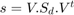
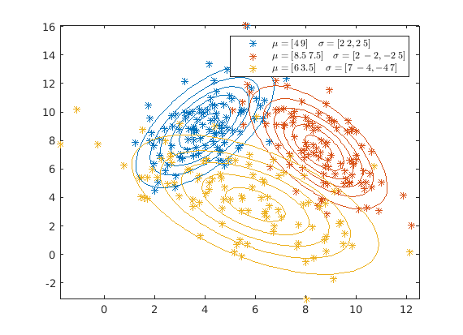

Compte Rendu de TP "Décision Bayésienne"
Contents
2. Génération d'une variable aléatoire gaussienne
N = 1000; means = ones(1,N); vars = ones(1,N); sample = 3 + 2.*randn(1,N); for n = 1:N; means(1,n) = mean(sample(1,1:n)); vars(1,n) = var(sample(1,1:n)); end index = linspace(1,N,N);
D'après la figure ci-dessus, on peut constate que le moyen empirique et la variance empirique tends vers le moyen ideal et le variance idéal.
close all figure(1) plot(index, means) hold on plot(index, vars) axis([1 N 0 8]) legend({'$$\mu=3$$', '$$\mu=4$$'},'Interpreter','latex')

3. Géneration de vecteurs aléatoire gaussiens
1)
N = 100; mu = [4 * ones(N,1), 9*ones(N,1)]; Z1 = mu + randn(100,2); fig=figure(2); hax=axes; scatter(Z1(:, 1), Z1(:,2), '.') SP=4; %your point goes here line([4 4],get(hax,'YLim'),'Color',[1 0 0]) line(get(hax,'XLim'),[9 9],'Color',[1 0 0])

2)
N = 10000; mu = [4 9]; Sigma = [1 0; 0 6]; R = chol(Sigma); Z2 = repmat(mu,N,1) + randn(N,2)*R; Z2_means = mean(Z2) Z2_cov = cov(Z2)
D'après le resulta ci-dessous, on constate que le moyen et la covariance que l'on obtiens bien conresponds à ce qu'on demand.
Z2_means =
3.9994 9.0151
Z2_cov =
1.0200 -0.0288
-0.0288 6.0630
3) TODO
4)
N = 10000; sigma3 = [2 2;2 5]; U = sqrtm(sigma3); Z4 = randn(N,2)*U.'; Z4_means = mean(Z4) Z4_cov = cov(Z4)
D'après le resulta ci-dessous, on constate que le moyen et la covariance que l'on obtiens bien conresponds à ce qu'on demand.
Z4_means =
-0.0012 -0.0094
Z4_cov =
2.0207 2.0213
2.0213 5.0559
[V S] = eig(sigma3); V1 = V(:,2); V2 = V(:, 1); orientation = atan2(6, 1)
L'orientation de l'ellipsoide de Mahalanobis associé à s est 1.4056.
orientation =
1.4056
s= V * S * V.'
L'expression  est bien verifié.
s =
2 2
2 5
5)
mu1 = [4 9]; sigma1 = [2 2; 2 5]; R1 = chol(sigma1); z1 = repmat(mu1,100,1) + randn(100,2)*R1; mu2 = [8.5 7.5]; sigma2 = [2 -2; -2 5]; R2 = chol(sigma2); z2 = repmat(mu2,100,1) + randn(100,2)*R2; mu3 = [6 3.5]; sigma3 = [7 -4; -4 7]; R3 = chol(sigma3); z3 = repmat(mu3,100,1) + randn(100,2)*R3;% que l'on obtiens bien conresponds à ce qu'on demand. fig_scatter = figure line1 = plot(z1(:, 1), z1(:,2), '*'); hold on line2 = plot(z2(:, 1), z2(:,2), '*'); hold on line3 = plot(z3(:, 1), z3(:,2), '*'); legend({'$$\mu=[4\:9] \quad \sigma = [2\:2 ,2\:5]$$' , '$$\mu=[8.5 \: 7.5] \quad \sigma = [2 \: -2,-2 \: 5]$$' , '$$\mu=[6 \: 3.5] \quad \sigma = [7 \: -4,-4 \: 7]$$'},'Interpreter','latex')
fig_scatter =
Figure (3) with properties:
Number: 3
Name: ''
Color: [0.9400 0.9400 0.9400]
Position: [560 528 560 420]
Units: 'pixels'
Use GET to show all properties

4.Couleur d'équidensité
% 1) X = linspace(0.24,12.5,57); Y = linspace(-2, 15,57); % 2) dens1 = normpdf(X,Y, mu1, sigma1); % 3) figure contour(X,Y,dens1.')
A l'aide de la fonction contour, on obtiens des contours sou forme de ellipsoide.

figure() dens2 = normpdf(X,Y, mu2, sigma2); dens3 = normpdf(X,Y, mu3, sigma3); contour(X,Y,dens1.', 'LineColor', get(line1, 'Color')) hold on contour(X,Y,dens2.', 'LineColor', get(line2, 'Color')) hold on contour(X,Y,dens3.', 'LineColor', get(line3, 'Color')) hold on legend({'$$\mu=[4\:9] \quad \sigma = [2\:2 ,2\:5]$$' , '$$\mu=[8.5 \: 7.5] \quad \sigma = [2 \: -2,-2 \: 5]$$' , '$$\mu=[6 \: 3.5] \quad \sigma = [7 \: -4,-4 \: 7]$$'},'Interpreter','latex') figure mesh(X,Y,dens1) hold on mesh(X,Y,dens2) hold on mesh(X,Y,dens3) hold on
TODO


5. Visualizsation des frontières
figure(fig_scatter) contour(X,Y,dens1.', 'LineColor', get(line1, 'Color')) hold on contour(X,Y,dens2.', 'LineColor', get(line2, 'Color')) hold on contour(X,Y,dens3.', 'LineColor', get(line3, 'Color')) hold on legend({'$$\mu=[4\:9] \quad \sigma = [2\:2 ,2\:5]$$' , '$$\mu=[8.5 \: 7.5] \quad \sigma = [2 \: -2,-2 \: 5]$$' , '$$\mu=[6 \: 3.5] \quad \sigma = [7 \: -4,-4 \: 7]$$'},'Interpreter','latex')
6.Application
load('voitures.mat'); class1 = cars(find(cars(:, 8) == 1.0), [1,5]); class2 = cars(find(cars(:, 8) == 2.0), [1,5]); class3 = cars(find(cars(:, 8) == 3.0), [1,5]); min1 = min(class1); max1 = max(class1); mu1 = mean(class1); cov1 = cov(class1); min2 = min(class2); max2 = max(class2); mu2 = mean(class2); cov2 = cov(class2); min3 = min(class2); max3 = max(class2); mu3 = mean(class3); cov3 = cov(class3); X = linspace(2.5,45,100); Y = linspace(1000,5500,100); dens1 = normpdf(X,Y, mu1, cov1); dens2 = normpdf(X,Y, mu2, cov2); dens3 = normpdf(X,Y, mu3, cov2); figure line4 = plot(class1(:, 1), class1(:,2), '*'); hold on line5 = plot(class2(:, 1), class2(:,2), '*'); hold on line6 =plot(class3(:, 1), class3(:,2), '*'); contour(X,Y,dens1.',3, 'LineColor', 'r') hold on contour(X,Y,dens2.',3,'LineColor', 'c') hold on contour(X,Y,dens3.',3,'LineColor', 'b') legend('USA', 'Europ', 'Asie','USA', 'Europ', 'Asie')